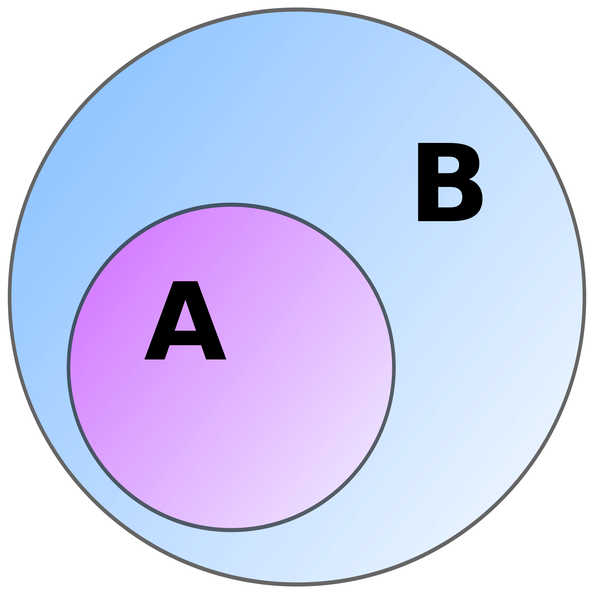
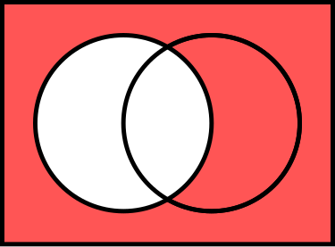

Required Math#
this contains a glossary of mathematical terms (such as symbols for domains and spaces), fundamentals of mathematics required to understand machine learning (including things such as matrix math)
General Mathematical Reference Material#
information on domains in Miscellaneous Concepts of the Theory section
specifically Relative Function Spaces and Integral Identities
information on Element Mathematics \(x\in A\)
information on Sets
Symbol Glossary#
Wiki Math Symbol Glossary \(\in \notin \ni \not\ni \cup \cap\) \ \(\Delta\) x \(\subset \underline\subset \supset \underline\supset\) U \(\mathbb{R} \mathbb{N} \mathbb{Z} \mathbb{Q} \mathbb{C} \phi \{\}\)
Element Mathematics (correpond to individual elements of sets)
\(\in\) = “is an element of”
\(\notin\) = “is not an element of”
\(\ni\) = “contains as member”
\(\not\ni\) = “does not contain as member”
\(\forall\) = “for all”
-
\(\cup\) = “union of”
\(\cap\) = “intersection of”
\ = “set difference”
\(\Delta\) = “symmetric difference”
x = “cartesian product”
Examples:
\(A \cup B\) is the set of all things that are members of A or B or both
\(A \cap B\) is the set of all things that are memberrs of both A and B
\(A\) \ \(B\) (or \(A-B\)) is the set of all things that belong to A but not B
\(A \Delta B\) is the set of all things that belong to A or B but not both
\(A x B\) is the set of all ordered pairs (a,b) such that a is an element of a and b is a element of B
-
\(\underline\subset\) = “is a subset of”
\(\underline\supset\) = “is a superset of”
\(\subset\) = “is a proper subset of” or “is any subset of” depending on the author
\(\supset\) = “is a proper superset of” or “is any superset of” depending on the author
Special {sets} of numbers
U is the universal set containing all elements being discussed
\(\mathbb{R}\) is the set of all real numbers
\(\mathbb{N}\) is the set of all natural numbers {0,1,2,3,…}
\(\mathbb{Z}\) is the set of all integers (positive, negative, 0) {…/-2,-3,0,1,2,3,…}
\(\mathbb{Q}\) is the set of all rational numbers (the set of all proper and improper fractions) \(\mathbb{Q}=\{{a \over b}|a,b \in \mathbb{Z}, b\ne0\}\)
\(\mathbb{C}\) is the set of all complex numbers (so includes the real and imaginary parts) \(\mathbb{C}=\{ a + b_i | a,b \in \mathbb{R}\}\)
\(\phi\) or\(\{\}\) is the Empty Set (or Null Set) is a unique set that has no members
Degrees of Sets
\(\mathbb{R}^1\) is the set of all real numbers
{-1, 0, 2, 3, 3.4245}, etc\(\mathbb{R}^2\) is the set of all pairs of real numbers
{ {-1,1}, {0,4}, {2,17}, {15,3.4245} }, etc
Other
\(\langle u \rangle\) = angle brackets (meaning is contextual, potentially “object generated by u”)
\([\![u]\!]\) = ???
\(\mapsto\) = used for defining a function without having to name it, for instance \(x\mapsto x^2\) is the square function
Sets#
About Sets:
Sets don’t have duplicates
so each number (or in the case for a set of say(x,y) points) appears only once
the set \(\mathbb{R}^2\) could contain {1,2} and {2,1}, but wouldn’t contain {1,2} twice
Sets are unordered
{{1,2},{2,1}} = {{2,1},{1,2}}obviously the pairs of points within still need to be unique - that parts ordered, but those pairs within the set aren’t
{1,2,3,4,5} = {5,4,3,2,1} = {3, 1, 4, 5, 2}
Subsets and Supersets:
\(A \underline\subset B\) -> “A is a subset of B” -> every element of A is also an element of B -> also implies:
\(B \underline\supset A\) -> “B is a superset of A”
proper subsets
A is a proper subset of B if A and B are not equal
if A = B, they are subsets of each other since each member of one is a member of the other, but not a proper subset
\(\{1,3\}\subset\{1,2,3,4\}\quad\) <- it’s a proper subset since they’re not equal but the first is contained
\(\{1,2,3,4\}\underline\subset\{1,2,3,4\}\quad\) <- it’s a subset, but not proper since they’re just equal
Special Sets Examples:
\(\mathbb{Q}\) rational number set
\(-{7 \over 4} \in \mathbb{Q}\)
\(5 = {5 \over 1} \in \mathbb{Q}\)
\(\mathbb{C}\) complex numbers set
\(1+2i\in\mathbb{C}\)
Geometric Interpretation of \(\mathbb{R}^n\), the set of real numbers in \(n^{th}\)-degree space:
\(\mathbb{R}^1\) is the set of all real numbers. Sets do not have duplicates, so each number only appears once.
so geometrically, \(\mathbb{R}^1\) would represent the set of all possible points on an infinite 1D line
\(\mathbb{R}^2\) is the set of all possible ordered pairs of real numbers (the ‘ordered’ part means that {1,2} \(\ne\) {2,1} and \(\mathbb{R}^2\) would contain both)
so geometrically, \(\mathbb{R}^2\) would represent all possible (x,y) locations on an infinite 2D plane with no duplicates
\(\mathbb{R}^3\) is the set of all possible ordered lists of 3 real numbers
so geometrically, \(\mathbb{R}^3\) would represent all possible (x,y,z) locations in an infinite 3D space with no duplicates
and so on, so \(\mathbb{R}^n\) would contain all possible ‘locations’ in an \(n^{th}\)-degree ‘space’
-
this gets used later on
Note on meaning of Interception (\(\cap\)) and Union (\(\cup\)) for example Sets A and B
A = {1, 3, 5, 8}
B = {2, 3, 6, 7, 8}
A U B = {1, 2, 3, 5, 6, 7, 8} (Union)
A ∩ B = {3, 8} (Intersection)
Visualizing Sets#
Subset and Superset
\(A \underline\subset B\): A is a subset of B
\(B \underline\supset A\): B is a superset of A
- 
\(\quad A \cap B =\) The Intersection of A and B :
T\(\quad A \cup B =\) The Union of A and B :
\(\quad A^c = \{a\in U:a\notin A\} =\) The Complement of A in U
(AKA all the elements “a” of universal set “U” that aren’t in set “A”)
- 
\(\quad A\) \ \(B =\) The Set Difference of A and B :
\(\quad A \Delta B =\) The Symmetric Difference of A and B:
Special Number Sets Containing Other Special Number Sets:
{kind=link}
{kind=link}
{kind=link}
{kind=link}
{kind=link}
{kind=link}
{kind=link}
Double Sum#
\(\displaystyle\sum_{i=1}^m\displaystyle\sum_{j=1}^nx_iy_j\)
\(= x_1y_1 + x_1y_2 +...+ x_2y_1 + x_2y_2 +...\)
\(=(x_1+x_2+...+x_m)y_1+(x_1+x_2+...+x_m)y_2+...\)
\(=\left(\displaystyle\sum_{i=1}^m\right)(y_1+y_2+...+y_n)\)
\(=\left(\displaystyle\sum_{i=1}^m x_i\right)\left(\displaystyle\sum_{j=1}^n y_j\right)\)
you multiply each combination of the terms
looks like they’re separable
infinite double series can be written in terms of a single series
\(\displaystyle\sum_{k=0}^\infty\displaystyle\sum_{l=0}^\infty c_{kl} = \displaystyle\sum_{i=0}^\infty b_i\)
by reordering the terms like this:
\(b_0 = c_{00}\)
\(b_1 = (c_{10}+c_{11})+c_{01}\)
\(b_2 = (c_{20}+c_{21}+c_{22})+(c_{02}+c_{12})\)
\(b_3 = (c_{30}+c_{31}+c_{32}+c_{33})+(c_{03}+c_{13}c_{23})\)
it must go on like that infinitely
Gradients#
The Nabla Operator \(\nabla\)#
\(\nabla\) = Del = Nabla Operator = \(({\partial\over{\partial x_1}},...,{\partial\over{\partial x_n}})\) = vector operator
for a 3D Cartesian coordinate system \(\mathbb{R}^3\) (using x,y,z):
\(\nabla = e_x{\partial\over{\partial x}} + e_y{\partial\over{\partial y}} + e_z{\partial\over{\partial z}} = ({\partial\over{\partial x}},{\partial\over{\partial y}},{\partial\over{\partial z}})\)
\(e_x, e_y, e_z\) are the unit vectors in directions x, y, and z
I do not believe that \(\nabla\) changes the size of a Tensor it acts on
it becomes as long as it needs to in order to meet the matrix multiplication requirements
(inside dimensions must match)
I think it can rotate in either direction to become a row vector or column vector
I think that might be a basic property of these ordered Tuple things
the dimensions of other vectors do seem to be important
The Laplace Operator \(\nabla\cdot\nabla = \nabla^2 = \Delta\)#
gives the divergence of the gradient of a scalar function on Euclidian space
can be represented by \(\nabla\cdot\nabla\) or \(\nabla^2\) or \(\Delta\)
\(\nabla f\) = the gradient of \(f\)
\(\nabla^2 f\) = the divergence of \(f\)
it’s a second-order differential operator
In n-dimensional Euclidian Space
in Cartesian coordinate system (where x,y,z are perpendicular to each other),
it’s the sum of the second partial derivatives of the function with respect to each independent variable
\(\nabla = ({\partial\over{\partial x_1}},...,{\partial\over{\partial x_n}})\)
\(\nabla^2 = ({\partial^2\over{\partial x_1^2}},...,{\partial^2\over{\partial x_n^2}})\)
\(\Delta f = \nabla^2 f = \nabla\cdot\nabla f\)
\(\Delta f = \sum_{i=1}^n({\partial^2\over{\partial x_i^2}})\) for Cartesian coordinates \(x_i\)
in 3D cartesian coordinates \(x_i=(x_1,x_2,x_3)=(x,y,z)\), it’s:
\(\nabla^2 f= ({\partial^2 f\over{\partial x^2}}+{\partial^2 f\over{\partial y^2}}+{\partial^2 f\over{\partial z^2}})\)
Quasirandom Sampling#
my notes used chaospy for random sampling
Suggests “new R2” method, though I haven’t heard about it elsewhere

Matrix Math#
I feel like I need to refresh my basic matrix math and notation
what it is?
matrix is 2D tensor (3D and higher are hard to represent on paper)
without further specifications they represent linear maps
allow explicit computations in linear algebra
absolute basics
matrix \( G = \begin{bmatrix} 4 & 14 & -7 \\ \textcolor{pink}{18} & 5 & 13 \\ -20 & 4 & 22 \\ \end{bmatrix} \)
element \(g_{\color{aqua}{2},\textcolor{orange}{1}} = \textcolor{pink}{18}\) (row \(\color{aqua}{i} = 2\), column \(\textcolor{orange} j = 1\))
scalar multiplication
you just multiply each element of the matrix by the scalar
(element-by-element)
adding and subtracting matrices
you just add the elements in the same locations together
matrices must be exactly the same size
Matrix-Vector Product#
column vector \( \boldsymbol{v} = \begin{bmatrix} \textcolor{red} x \\ \textcolor{blue} y \\ \end{bmatrix} = \textcolor{red} x \begin{bmatrix} 1 \\ 0 \\ \end{bmatrix} + \textcolor{blue} y \begin{bmatrix} 0 \\ 1 \\ \end{bmatrix} \)
linear transforming matrix \( \boldsymbol{A} = \begin{bmatrix} \textcolor{green} a & \textcolor{purple} b \\ \textcolor{orange} c & \color{yellow} d \\ \end{bmatrix} \)
multiply \( \boldsymbol{A} \boldsymbol{v} = \begin{bmatrix} \textcolor{green} a & \textcolor{purple} b \\ \textcolor{orange} c & \color{yellow} d \\ \end{bmatrix} \begin{bmatrix} \textcolor{red} x \\ \textcolor{blue} y \\ \end{bmatrix} = \begin{bmatrix} \textcolor{green} a \textcolor{red} x + \textcolor{purple} b \textcolor{blue} y \\ \textcolor{orange} c \textcolor{red} x + \color{yellow} d \textcolor{blue} y \\ \end{bmatrix} \)
inner dimensions match (\(\textcolor{red}2\) x \(\cancel{\textcolor{purple}2}\))(\(\cancel{\textcolor{purple}2}\) x \(\textcolor{blue}1\)) -> final dimensions (\(\textcolor{red}2\) x \(\textcolor{blue}1\))
product of matrices with dimensions (\(\textcolor{red} m\) x \(\textcolor{purple} n\)) and (\(\textcolor{purple} n\) x \(\textcolor{blue} k\)) will be (\(\textcolor{red} m\) x \(\textcolor{blue} k\))
inner dimensions \(\textcolor{purple} n\) must match to multiply
outer dimensions \(\textcolor{red} m\) and \(\textcolor{blue} k\) decide the resulting shape
(\(\textcolor{red} m\) x \(\textcolor{purple} n\)) (\(\textcolor{purple} n\) x \(\textcolor{blue} k\)) \(\to\) (\(\textcolor{red} m\) x \(\textcolor{blue} k\))
Matrix Multiplication#
look at dot product of an ordered \(n\)-tuples \(\vec{a}\) and \(\vec{b}\) first
\(\vec{a}\cdot\vec{b} = (\textcolor{purple} 3,\textcolor{green} 1,\textcolor{pink} 8)\cdot(\textcolor{purple} 4,\textcolor{green} 2,\textcolor{pink} 3)\)
\(\vec{a}\cdot\vec{b} = \textcolor{purple} 3 \cdot \textcolor{purple} 4+\textcolor{green} 1 \cdot \textcolor{green} 2 + \textcolor{pink} 8 \cdot \textcolor{pink} 3\)
\(\vec{a}\cdot\vec{b} = \textcolor{purple}{12} + \textcolor{green}{2} + \textcolor{pink}{24} = 38 \)
matrix to tuples
helpful to think of the matrix as a set of \(n\)-tuples (tuples of length \(n\))
\( \begin{matrix} \vec{r_1} = (1,2) \to \\ \vec{r_2} = (3,4) \to \\ \end{matrix} \overbrace{ \begin{bmatrix} 1 & 2 \\ 3 & 4 \\ \end{bmatrix}}^{ \begin{matrix} \vec{c_1} = (1,3) \\ \vec{c_2} = (2,4) \\ \end{matrix}} \)
actual dot product of matrix
take these two matrices
\( \boldsymbol{C} = \boldsymbol{A} \cdot \boldsymbol{B} = \begin{bmatrix} 1 & 7 \\ 2 & 4 \\ \end{bmatrix} \cdot \begin{bmatrix} 3 & 6 \\ 5 & 2 \\ \end{bmatrix} \)
\( A = \left. \begin{aligned} \begin{bmatrix} \color{deepskyblue}{1} & \color{deepskyblue}{7} \\ \color{aqua}{2} & \color{aqua}{4} \\ \end{bmatrix} \end{aligned} \right\} \begin{matrix} {\color{deepskyblue}\vec{a_1}} = {\color{deepskyblue}(1,7)} \\ {\color{aqua}\vec{a_2}} = {\color{aqua}(2,4)} \\ \end{matrix} \) (use rows of first matrix)
\( B = \left. \begin{aligned} \begin{bmatrix} \color{pink}{3} & \color{orange}{6} \\ \color{pink}{5} & \color{orange}{2} \\ \end{bmatrix} \end{aligned} \right\} \begin{matrix} {\color{pink}\vec{b_1}} = {\color{pink}(3,5)} \\ {\color{orange}\vec{b_2}} = {\color{orange}(6,2)} \\ \end{matrix} \) (use columns of second matrix)
\( \begin{bmatrix} \color{deepskyblue}{1} & \color{deepskyblue}{7} \\ \color{aqua}{2} & \color{aqua}{4} \\ \end{bmatrix} \cdot \begin{bmatrix} \color{pink}{3} & \color{orange}{6} \\ \color{pink}{5} & \color{orange}{2} \\ \end{bmatrix} = \begin{bmatrix} {\color{deepskyblue}\vec{a_1}} \cdot \color{pink}{\vec{b_1}} & {\color{deepskyblue}\vec{a_1}} \cdot \color{orange}{\vec{b_2}} \\ {\color{aqua}\vec{a_2}} \cdot \color{pink}{\vec{b_1}} & {\color{aqua}\vec{a_2}} \cdot \color{orange}{\vec{b_2}} \\ \end{bmatrix} = \begin{bmatrix} {\color{deepskyblue}(1,7)} \cdot \color{pink}{(3,5)} & {\color{deepskyblue}(1,7)} \cdot \color{orange}{(6,2)} \\ {\color{aqua}(2,4)} \cdot \color{pink}{(3,5)} & {\color{aqua}(2,4)} \cdot \color{orange}{(6,2)} \\ \end{bmatrix} \)
\( \begin{bmatrix} {\color{deepskyblue}(1,7)} \cdot \color{pink}{(3,5)} & {\color{deepskyblue}(1,7)} \cdot \color{orange}{(6,2)} \\ {\color{aqua}(2,4)} \cdot \color{pink}{(3,5)} & {\color{aqua}(2,4)} \cdot \color{orange}{(6,2)} \\ \end{bmatrix} = \begin{bmatrix} {\color{deepskyblue}1}*{\color{pink}3}+{\color{deepskyblue}7}*{\color{pink}5} & {\color{deepskyblue}1}*{\color{orange}6}+{\color{deepskyblue}7}*{\color{aqua}2} \\ {\color{aqua}2}*{\color{pink}3}+{\color{aqua}4}*{\color{pink}5} & {\color{aqua}2}*{\color{orange}6}+{\color{aqua}4}*{\color{orange}2} \end{bmatrix} = \begin{bmatrix} 38 & 20 \\ 26 & 20 \\ \end{bmatrix} \)
Matrix Multiplication Properties#
resulting dimensions: 1x2 \(\cdot\) 2x3 = 1x3
final size takes the rows from the first and the columns from the second
this is also why the inner dimensions of the matrices need to be the same
you need to multiply the rows of the first by the columns of the second
the number of terms in the rows of the first (= the columns of the first)
needs to match the number of terms in the columns of the second (the rows of the second)
some properties
\(AB \ne BA\)
\((AB)C = A(BC)\)
\(A(B+C)=AB+AC\)
\((B+C)A = BA+BC\)
\(IA=AI=A\)
the Identity Matrix and the Kronecker Delta#
I=identity matrix
identity matrix is a square matrix with 1’s on the diagonal and 0’s everywhere else
\(I_n = diag(1,1,...,1) \to (I_n)_{ij} = \delta_{ij}\)
\(I_n = I_{n\times n}\) is a square matrix of n x n dimensions
if \(A\) is an m x n matrix
\(I_{m\times m} A_{m\times n} = A_{m\times n} I_{n\times n} = A_{m\times n}\)
the inner dimensions still need to be the same to muliply
so you just pick an identity matrix of a size that will allow the multiplication to happen
multiplying any matrix by the identity matrix will not change it
the way that matrix math works
multiplying the rows of the first matrix by the columns of the second
summing up the results in each cell
you just end up with the original matrix
it’s a square matrix of whatever size is needed for the inside dimensions to match
so the dimensions don’t change
and you basically just end up multiplying the original contents of the element by 1 and all the rest by 0
which results in you putting the original element in the new matrix of the same size, unchanged
\(\delta_{ij}\) = Kronecker delta = \(\begin{cases} 0 \quad\text{if}\quad i \ne j \\ 1 \quad\text{if}\quad i = j \end{cases}\)
\(I_{ij}=\delta_{ij}\)
you could use the kronecker delta function to create an identity matrix
unlike the identity matrix, I suppose the kronecker delta could function on non-square (max \(i\) \(\ne\) max \(j\))
actually the Kronecker Delta is a function of two variables \(i\) and \(j\)
scalar multiplication has you just multiplying all entries of a given matrix by a scalar
if this behaved more like a scalar, it would get multiplied by all elements of a matrix
then it would zero out all of the non-diagonal components
so which is it?
useful properties
sifting property \(\to\) for \(j \in \mathbb{Z}: \displaystyle\sum_{-\infty}^{\infty}{a_i\delta_{ij}} = a_j\)
\(\mathbb{Z}\) is the set of all positive and negative integers including 0
it removed the summation and swapped the index of \(a\) from \(i\) to \(j\)
my current understanding makes me think that this means they’re switching from rows to columns
the Dot Product and Matrix Multiplication#
dot product
algebraic operation that takes two same sized vectors and returns a single scalar
for vectors
dot product is the magnitude scaled by how much they’re pointing along the same axis
\(a \cdot b = |a||b| cos(\theta)\)
cross product is the magnitude scaled by how much they’re perpendicular
\(a \times b = |a||b| sin(\theta)\)
vector dot product example
take the two sequences a and b \( \begin{cases} a = ( a_1 , a_2 , ... , a_n ) \\ b = ( b_1 , b_2 , ... , b_n ) \\ \end{cases} \)
dot products are \(a \cdot b = \sum_{i=1}^{n} a_i b_i\)
the dot product tells you to just multiply the elements in the same position and add up
if you treat the vectors as row matrices
the vectors become these matrices: \( \begin{cases} a = \begin{bmatrix} a_1 & a_2 & a_3 \end{bmatrix} \\ b = \begin{bmatrix} b_1 & b_2 & b_3 \end{bmatrix} \\ \end{cases} \)
you have a slight problem
you can’t multiply them together as-is (1x3)(1x3)
the inner dimensions of matrices have to agree to multiply together
you have to \(transpose^T\) the second one (1x3)(3x1)
\( a\cdot b = ab^T = [a_1 \ a_2 \ a_3] \begin{bmatrix} b_1 \\ b_2 \\ b_3 \end{bmatrix} = a_1 b_1 + a_2 b_2 + a_3 b_3 \)
this make it seem that the function of the dot is to inform the second one to transpose
therefore:
\(a\cdot b = ab^T \ne ab\)
but other notations seem inconsistent
it looks like sometimes they use the dot and sometimes they don’t
at least when matrices are involved
for vectors, the dot may have meant transpose, assuming they were originally the same shape
for matrices, it may just be assumed that you know the shape has to match already
what’s the difference between matrix multiplication and the dot product?
matrix multiplication is basically a matrix version of the dot product
the result of a dot product is a scalar
the result matrix multiplication is a matrix
the elements of that matrix are the dot products of pairs of vectors in each matrix
the rows of the first matrix are vectors, the columns of the second matrix are vectors
matrix multiplication example - I’m going shopping for apples, oranges, and bananas for two people.
Person 1 wants 1 of each fruit, person 2 wants 10 of each fruit
fruit quantity matrix = \(A=\begin{bmatrix}a_1\\ a_2\end{bmatrix}=\begin{bmatrix}1&1&1\\ 10&10& 10\\ \end{bmatrix}\)
apples cost \(1, oranges cost \)2, and bananas cost $0.50
fruit cost matrix = \(B = \begin{bmatrix} \$1\\ \$2\\ \$0.5 \end{bmatrix}\)
I had to transpose it for the next part to work
how much does each person need to reimburse me?
\(A \cdot B = \begin{bmatrix} 1 & 1 & 1\\ 10 & 10 & 10 \end{bmatrix} \begin{bmatrix} \$1\\ \$2\\ \$0.5 \end{bmatrix} = \begin{bmatrix} 1 \times \$1 + 1 \times \$2 + 1 \times \$0.5 \\ 10 \times \$1 + 10 \times \$2 + 10 \times \$0.5 \end{bmatrix} = \begin{bmatrix} \$3.5 \\ \$35 \end{bmatrix}\)
person 1 owes me \(3.50 and person 2 owes me \)35
question
does the dot do anything there?
it looks like for vectors the dot instructs you to transpose the second one so the dimensions match
that last example, though, no transposing happened
does the dot have additional meaning for fully formed matrices?
Einstein Summation Notation#
Einstein Summation Notation Wikipedia
the Wikipedia articles use this pretty extensively
implies summation over a set of indexed terms in a formula
makes them more compact
when an index variable appears twice in a single term and isn’t otherwise defined
that term is considered to be summed over all values of the index
so you can rewrite this:
\(y = \displaystyle\sum_{i=1}^3 c_i x^i = c_1 x^1 + c_2 x^2 + c_3 x^3\)
as this:
\(y = c_i x^i\)
the upper indices aren’t exponents, they’re indices of coordinates, coefficients, or basis vectors
\(x^2\) = second component of x, not x-squared
it puts the index up high because, in a single term, an index typically only occurs
once in an upper (superscript) position
once in an under (subscript) position
typically \(x^1=x\) and \(x^2=y\) and \(x^3=z\)
in terms of covariant and contravariant vectors
upper indices for contravariant vectors (vectors) (coordinate vectors)
components vary opposite to the basis vectors
if your unit vectors are 1m long and you change them to 1cm long (multiplying by 100)
an existing position vector with components in meters will need to be divided by 100
you scale the position vector inversely to the referenced vectors - contravariance
lower indices for covariant vectors (covectors) (dual vector)
components vary with the basis vectors
represents a linear map from vectors to scalars
not actually a vector, it’s an object that lies in a dual vector space
row and column vectors
row vector: the lower index (subscript) which column you’re in
\([w_1 ... w_k]\)
column vector: the upper index (superscript) indicates which row you’re in
\(\begin{bmatrix} v^1 \\ \vdots \\ v^k \end{bmatrix}\)
The Displacement Vector \(\boldsymbol{u}\)#
the displacement vector \(\boldsymbol{u}\) points from the original (unloaded) location of particle \(p\) to its final position
the displacement vectors for all particles \(p\) in the domain form a displacement field
if we’re in cartesian (x,y,z) coordinate system, \(\boldsymbol{u}\) has three components \(u_x, u_y, u_z\)
in which case it can be written in engineering notation as
\(\boldsymbol{u} = u_x e_x + u_y e_y + u_z e_z\)
where \(e_x\) , \(e_y\) , and \(e_z\) are unit vectors pointing in directions \(x,y,z\) respectively
and \(u_x, u_y, u_z\) are the magnitude of the displacement vector in each of those directions
Tuple
the displacement vector is a vector - a combination of magnitude and direction in some space
that’s all the information that’s contained. It doesn’t have established rows or columns
it’s basically a Tuple - an ordered list (with the understanding of the direction of each list element)
you can also write it matrix
matrices are really just useful ways to arrange data
the basic form of this thing doesn’t have row/column arrangements built-in, so we can impose them
Expanding Einstein Notation to get the Displacement Vector in Matrix Form#
Einstein Notation
uses indices i and j to specify the location in a matrix
i = row index (tells you which row to look in)
j = column index (tells you which column to look in)
if cartesian space \(\to \textcolor{orange} 1 = \textcolor{orange} x\) , \(\textcolor{blue} 2 = \textcolor{blue} y\) , \(\textcolor{pink} 3 = \textcolor{pink} z\) (displacement in each direction)
so we can make it a row or a column vector, and if we need to add it to a 3x3 matrix, we can just repeat it
\(u_i: \)
\( \) \(u_{\textcolor{purple} i} =\overbrace{ \begin{bmatrix} u_{\textcolor{purple} i} \\ u_{\textcolor{purple} i} \\ u_{\textcolor{purple} i} \\ \end{bmatrix}}^{\textcolor{green} j=1} \begin{matrix} \gets \textcolor{purple} i = \textcolor{orange} 1 \\ \gets \textcolor{purple} i = \textcolor{blue} 2 \\ \gets \textcolor{purple} i = \textcolor{pink} 3 \\ \end{matrix} = \begin{bmatrix} u_1 \\ u_2 \\ u_3 \end{bmatrix} = \) \(\begin{bmatrix} \textcolor{orange}{u_x} \\ \textcolor{blue} {u_y} \\ \textcolor{pink} {u_z} \\ \end{bmatrix}\)
\(u_j\) :
\( \) \( u_{\textcolor{green} j} = [ \overbrace{u_{\textcolor{green} j}}^{\textcolor{green} j = \textcolor{orange} 1} \overbrace{u_{\textcolor{green} j}}^{\textcolor{green} j = \textcolor{blue} 2} \overbrace{u_{\textcolor{green} j}}^{\textcolor{green} j = \textcolor{pink} 3} ] \gets \textcolor{purple} i = 1 \) \( \\ \quad = \begin{bmatrix} u_1 & u_2 & u_3 \end{bmatrix}\) \( \\ \quad = \begin{bmatrix} \textcolor{orange}{u_x} & \textcolor{blue}{u_y} & \textcolor{pink}{u_z} \end{bmatrix}\)
if you need to be 3x3 to add it to a 3x3 tensor, just extend it out
the 3x1 \(u_i\) gets repeated out to the right
\( u_{\textcolor{purple} i} = \) \(\begin{bmatrix} \textcolor{orange}{u_x} \\ \textcolor{blue} {u_y} \\ \textcolor{pink} {u_z} \\ \end{bmatrix}\) \( \to \begin{bmatrix} \textcolor{orange} {u_x} & \textcolor{orange}{u_x} & \textcolor{orange}{u_x} \\ \textcolor{blue}{u_y} & \textcolor{blue}{u_y} & \textcolor{blue}{u_y} \\ \textcolor{pink}{u_z} & \textcolor{pink}{u_z} & \textcolor{pink}{u_z} \\ \end{bmatrix}\)
the 1x3 \(u_j\) gets repeated down below
\(u_{\textcolor{green} j} = \) \( \underbrace{ \begin{bmatrix} \textcolor{orange}{u_x} & \textcolor{blue}{u_y} & \textcolor{pink}{u_z} \end{bmatrix} }_{ \begin{bmatrix} \textcolor{orange}{u_x} & \textcolor{blue}{u_y} & \textcolor{pink}{u_z} \\ \textcolor{orange}{u_x} & \textcolor{blue}{u_y} & \textcolor{pink}{u_z} \\ \textcolor{orange}{u_x} & \textcolor{blue}{u_y} & \textcolor{pink}{u_z} \\ \end{bmatrix}}\)
Note - I’m not positive that this is what’s happening but it matches in practice
it’s possible that \(\nabla \cdot \boldsymbol{u}\) changes it into 3x3 but that seems unlikely
The the 3x3 Displacement Vectors and their Derivatives#
the 3x3 Displacement Vectors
\( u_{\textcolor{purple} i} = \begin{bmatrix} \textcolor{orange} {u_x} & \textcolor{orange}{u_x} & \textcolor{orange}{u_x}\\ \textcolor{blue}{u_y} & \textcolor{blue}{u_y} & \textcolor{blue}{u_y} \\ \textcolor{pink}{u_z} & \textcolor{pink}{u_z} & \textcolor{pink}{u_z} \\ \end{bmatrix} = \begin{matrix} \overbrace{\textcolor{orange}{u_x}}^{j=1} & \overbrace{\textcolor{orange}{u_x}}^{j=2} & \overbrace{\textcolor{orange}{u_x}}^{j=3}\\ \textcolor{blue}{u_y} & \textcolor{blue}{u_y} & \textcolor{blue}{u_y} \\ \textcolor{pink}{u_z} & \textcolor{pink}{u_z} & \textcolor{pink}{u_z} \\ \end{matrix} \begin{matrix} \\ \gets \textcolor{purple} i=\textcolor{orange} 1 \\ \gets \textcolor{purple} i=\textcolor{blue} 2 \\ \gets \textcolor{purple} i=\textcolor{pink} 3 \end{matrix} \)
\( u_{\textcolor{green} j} = \begin{bmatrix} \textcolor{orange}{u_x} & \textcolor{blue}{u_y} & \textcolor{pink}{u_z} \\ \textcolor{orange}{u_x} & \textcolor{blue}{u_y} & \textcolor{pink}{u_z} \\ \textcolor{orange}{u_x} & \textcolor{blue}{u_y} & \textcolor{pink}{u_z} \\ \end{bmatrix} = \begin{matrix} \overbrace{\textcolor{orange}{u_x}}^{\textcolor{green} j=\textcolor{orange}1} & \overbrace{\textcolor{blue}{u_y}}^{\textcolor{green} j=\textcolor{blue}2} & \overbrace{\textcolor{pink}{u_z}}^{\textcolor{green} j=\textcolor{pink}3} \\ \textcolor{orange}{u_x} & \textcolor{blue}{u_y} & \textcolor{pink}{u_z} \\ \textcolor{orange}{u_x} & \textcolor{blue}{u_y} & \textcolor{pink}{u_z} \\ \end{matrix} \begin{matrix} \\ \gets i=1 \\ \gets i=2 \\ \gets i=3\end{matrix} \)
the 3x3 1st partial derivatives
\( u_{\textcolor{purple} i, \textcolor{green} j} = {{\partial}\over{\partial \textcolor{green} j}}u_{\textcolor{purple} i} = \begin{bmatrix} {{\partial}\over{\partial \textcolor{green} j}}\textcolor{orange}{u_x} & {{\partial}\over{\partial \textcolor{green} j}}\textcolor{orange}{u_x} & {{\partial}\over{\partial \textcolor{green} j}}\textcolor{orange}{u_x}\\ {{\partial}\over{\partial \textcolor{green} j}}\textcolor{blue}{u_y} & {{\partial}\over{\partial \textcolor{green} j}}\textcolor{blue}{u_y} & {{\partial}\over{\partial \textcolor{green} j}}\textcolor{blue}{u_y} \\ {{\partial}\over{\partial \textcolor{green} j}}\textcolor{pink}{u_z} & {{\partial}\over{\partial \textcolor{green} j}}\textcolor{pink}{u_z} & {{\partial}\over{\partial \textcolor{green} j}}\textcolor{pink}{u_z} \\ \end{bmatrix} = \begin{bmatrix} {{\partial}\over{\partial \textcolor{orange} 1}}\textcolor{orange}{u_x} & {{\partial}\over{\partial \textcolor{blue} 2}}\textcolor{orange}{u_x} & {{\partial}\over{\partial \textcolor{pink} 3}}\textcolor{orange}{u_x}\\ {{\partial}\over{\partial \textcolor{orange} 1}}\textcolor{blue}{u_y} & {{\partial}\over{\partial \textcolor{blue} 2}}\textcolor{blue}{u_y} & {{\partial}\over{\partial \textcolor{pink} 3}}\textcolor{blue}{u_y} \\ {{\partial}\over{\partial \textcolor{orange} 1}}\textcolor{pink}{u_z} & {{\partial}\over{\partial \textcolor{blue} 2}}\textcolor{pink}{u_z} & {{\partial}\over{\partial \textcolor{pink} 3}}\textcolor{pink}{u_z} \\ \end{bmatrix} = \begin{bmatrix} {{\partial}\over{\partial \textcolor{orange} x}}\textcolor{orange}{u_x} & {{\partial}\over{\partial \textcolor{blue} y}}\textcolor{orange}{u_x} & {{\partial}\over{\partial \textcolor{pink} z}}\textcolor{orange}{u_x}\\ {{\partial}\over{\partial \textcolor{orange} x}}\textcolor{blue}{u_y} & {{\partial}\over{\partial \textcolor{blue} y}}\textcolor{blue}{u_y} & {{\partial}\over{\partial \textcolor{pink} z}}\textcolor{blue}{u_y} \\ {{\partial}\over{\partial \textcolor{orange} x}}\textcolor{pink}{u_z} & {{\partial}\over{\partial \textcolor{blue} y}}\textcolor{pink}{u_z} & {{\partial}\over{\partial \textcolor{pink} z}}\textcolor{pink}{u_z} \\ \end{bmatrix} \)
\( u_{\textcolor{green} j,\textcolor{purple} i} = {{\partial}\over{\partial \textcolor{purple} i}}u_{\textcolor{green} j} = \begin{bmatrix} {{\partial}\over{\partial \textcolor{purple} i}}\textcolor{orange}{u_x} & {{\partial}\over{\partial \textcolor{purple} i}}\textcolor{blue}{u_y} & {{\partial}\over{\partial \textcolor{purple} i}}\textcolor{pink}{u_z} \\ {{\partial}\over{\partial \textcolor{purple} i}}\textcolor{orange}{u_x} & {{\partial}\over{\partial \textcolor{purple} i}}\textcolor{blue}{u_y} & {{\partial}\over{\partial \textcolor{purple} i}}\textcolor{pink}{u_z} \\ {{\partial}\over{\partial \textcolor{purple} i}}\textcolor{orange}{u_x} & {{\partial}\over{\partial \textcolor{purple} i}}\textcolor{blue}{u_y} & {{\partial}\over{\partial \textcolor{purple} i}}\textcolor{pink}{u_z} \\ \end{bmatrix} = \begin{bmatrix} {{\partial}\over{\partial \textcolor{orange} 1}}\textcolor{orange}{u_x} & {{\partial}\over{\partial \textcolor{orange} 1}}\textcolor{blue}{u_y} & {{\partial}\over{\partial \textcolor{orange} 1}}\textcolor{pink}{u_z} \\ {{\partial}\over{\partial \textcolor{blue} 2}}\textcolor{orange}{u_x} & {{\partial}\over{\partial \textcolor{blue} 2}}\textcolor{blue}{u_y} & {{\partial}\over{\partial \textcolor{blue} 2}}\textcolor{pink}{u_z} \\ {{\partial}\over{\partial \textcolor{pink} 3}}\textcolor{orange}{u_x} & {{\partial}\over{\partial \textcolor{pink} 3}}\textcolor{blue}{u_y} & {{\partial}\over{\partial \textcolor{pink} 3}}\textcolor{pink}{u_z} \\ \end{bmatrix} = \begin{bmatrix} {{\partial}\over{\partial \textcolor{orange} x}}\textcolor{orange}{u_x} & {{\partial}\over{\partial \textcolor{orange} x}}\textcolor{blue}{u_y} & {{\partial}\over{\partial \textcolor{orange} x}}\textcolor{pink}{u_z} \\ {{\partial}\over{\partial \textcolor{blue} y}}\textcolor{orange}{u_x} & {{\partial}\over{\partial \textcolor{blue} y}}\textcolor{blue}{u_y} & {{\partial}\over{\partial \textcolor{blue} y}}\textcolor{pink}{u_z} \\ {{\partial}\over{\partial \textcolor{pink} z}}\textcolor{orange}{u_x} & {{\partial}\over{\partial \textcolor{pink} z}}\textcolor{blue}{u_y} & {{\partial}\over{\partial \textcolor{pink} z}}\textcolor{pink}{u_z} \\ \end{bmatrix} \)
Second Derivatives
\( u_{\textcolor{green} j, \textcolor{green} j \textcolor{purple} i} = {\partial^2\over\partial \textcolor{green} j \partial \textcolor{purple} i} u_{\textcolor{green} j} = \begin{bmatrix} {{\partial^2}\over{\partial \textcolor{orange} x \textcolor{orange} x}}\textcolor{orange}{u_x} & {{\partial^2}\over{\partial \textcolor{blue} y \textcolor{orange} x}}\textcolor{blue}{u_y} & {{\partial^2}\over{\partial \textcolor{pink} z \textcolor{orange} x}}\textcolor{pink}{u_z} \\ {{\partial^2}\over{\partial \textcolor{orange} x \textcolor{blue} y }}\textcolor{orange}{u_x} & {{\partial^2}\over{\partial \textcolor{blue} y \textcolor{blue} y }}\textcolor{blue}{u_y} & {{\partial^2}\over{\partial \textcolor{pink} z \textcolor{blue} y }}\textcolor{pink}{u_z} \\ {{\partial^2}\over{\partial \textcolor{orange} x \textcolor{pink} z }}\textcolor{orange}{u_x} & {{\partial^2}\over{\partial \textcolor{blue} y \textcolor{pink} z }}\textcolor{blue}{u_y} & {{\partial^2}\over{\partial \textcolor{pink} z \textcolor{pink} z }}\textcolor{pink}{u_z} \\ \end{bmatrix} \)
\( u_{\textcolor{purple} i,\textcolor{green}{jj}} = {\partial^2\over\partial \textcolor{green} {j^2}} u_{\textcolor{purple} i} = \begin{bmatrix} {{\partial^2}\over{\partial \textcolor{orange} {x^2}}}\textcolor{orange}{u_x} & {{\partial^2}\over{\partial \textcolor{blue} {y^2}}}\textcolor{orange}{u_x} & {{\partial^2}\over{\partial \textcolor{pink} {z^2}}}\textcolor{orange}{u_x}\\ {{\partial^2}\over{\partial \textcolor{orange} {x^2}}}\textcolor{blue} {u_y} & {{\partial^2}\over{\partial \textcolor{blue} {y^2}}}\textcolor{blue} {u_y} & {{\partial^2}\over{\partial \textcolor{pink} {z^2}}}\textcolor{blue} {u_y} \\ {{\partial^2}\over{\partial \textcolor{orange} {x^2}}}\textcolor{pink} {u_z} & {{\partial^2}\over{\partial \textcolor{blue} {y^2}}}\textcolor{pink} {u_z} & {{\partial^2}\over{\partial \textcolor{pink} {z^2}}}\textcolor{pink} {u_z} \\ \end{bmatrix} \)